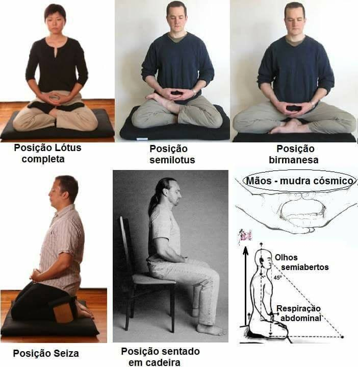

- Ponha um cronometro antes da sua meditação, começe com 1 minuto, e aumente +1 a cada dia de prática
- Sente na posição a seguir, que você ache mais confortável.

- inspire por 7 segundos, inspirando tranquilidade e paz
- segure o ar por 3 segundos, com muita paciência
- expire pela boca por 7 segundos, expirando todo estresse e ansiedade
- repita o processo no mínimo 3 vezes, até você se sentir mais relaxado
- Concentre-se em sua respiração, sempre focando nela. Inspire e expire calmamente pelo tempo que lhe relaxar mais
- Todas as vezes que distrair sua mente, volte-a imediatamente a sua respiração
- Ao terminar o processo, levanta-se lentamente e manteha o relaxamento adqurido.
- Você pode optar em ouvir algo relaxante durante sua meditação, como um guia para o processo, músicas indicadas para isso e etc.
- Você pode optar em realizar a meditação de olhos fechados, ou olhando para um ponto fixo, uma boa dica, é olhar para a chama de uma vela.
- NUNCA, faça a meditação deitado ou encostado, pois as chances de você dormir são altas.
- Parabéns pelas suas conquistas, cada passo, aparentemente grande ou pequeno, é um passo a mais para a relização do seu objetivo
voltar ao inicio